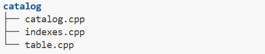
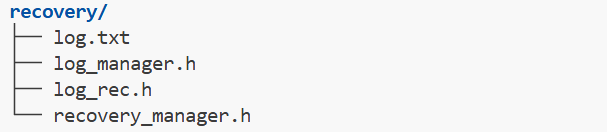
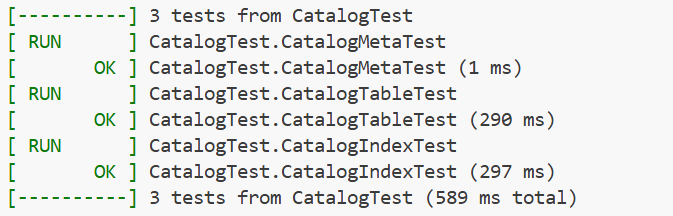
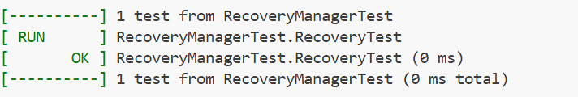

DataBase System ¶
MiniSQL 个人设计报告 ¶
一、 实验背景与目的¶
- 基于给定框架基础设计并实现一个精简型单用户SQL引擎MinSQL
- 在本次项目中，实现SQL引擎支持用户通过字符界面输入SQL语句实现简单的增、删、改、查操作
- 同时可以通过索引来进行查询的性能优化
- 在本次实验中， 设计并完成Index 与部分 Executor
二、 设计完成内容¶
- 在本次实验中，设计完成了：
CATALOG相关文件： RECOVERY MANAGER相关文件： - 并参与工程过程中的测试与bug修复
三、 具体模块设计¶
Catalog Manager相关模块设计¶
1、 整体架构¶
Catalog Manager 负责管理和维护数据库的所有模式信息，包括：
● 数据库中所有表的定义信息，包括表的名称、表中字段（列）数、主键、定义在该表上的索引。
● 表中每个字段的定义信息，包括字段类型、是否唯一等。
● 数据库中所有索引的定义，包括所属表、索引建立在那个字段上等。
这些模式信息在被创建、修改和删除后还应被持久化到数据库文件中。此外，Catalog Manager还需要为上层的执行器Executor提供公共接口以供执行器获取目录信息并生成执行计划。
2、 系统各模块的设计思路和实现¶
IndexInfo::Init¶
1.初始化meta_data_
2.初始化key_schema_(使用浅拷贝)
3.CreateIndex创建索引
GetSerializedSize()¶
依据SerializeTo,DeserializeFrom的实现，计算序列化大小(CatalogMeta,TableMetadata,IndexMetadata)
以CatalogMeta为例
void CatalogMeta::SerializeTo(char *buf) const {
MACH_WRITE_UINT32(buf, CATALOG_METADATA_MAGIC_NUM);
buf += 4;
MACH_WRITE_UINT32(buf, table_meta_pages_.size());
buf += 4;
MACH_WRITE_UINT32(buf, index_meta_pages_.size());
buf += 4;
for (auto iter : table_meta_pages_) {
MACH_WRITE_TO(table_id_t, buf, iter.first);
buf += 4;
MACH_WRITE_TO(page_id_t, buf, iter.second);
buf += 4;
}
for (auto iter : index_meta_pages_) {
MACH_WRITE_TO(index_id_t, buf, iter.first);
buf += 4;
MACH_WRITE_TO(page_id_t, buf, iter.second);
buf += 4;
}
}
+ table_page nums * (4 bytes table id + 4 bytes page id)
+ index_page nums * (4 bytes index id + 4 bytes page id)
uint32_t CatalogMeta::GetSerializedSize() const {
return 4 + 4 + 4
+ table_meta_pages_.size() * (4 + 4)
+ index_meta_pages_.size() * (4 + 4);
}
Catalog.cpp¶
CatalogManager Ctor¶
1.获取catalog_meta_page
2.根据init新建或读取metadata
init == true
1)NewInstance()新建metadata
2)获取catalog_meta_page的Data并序列化
init == false
1)获取catalog_meta_page的Data并反序列化
2)GetTable/IndexMetaPages读取table与index metadata
3.set next page id
4.unpin fetched page
CreateTable¶
1.create table_heap using DEEPCOPY SCHEMA
2.create table metadata
3.serialize to meta page
4.update catalog meta
5.create tableinfo
6.update table_names,tables_ in catalog
7.create index for unique attributes(primary key)
CreateIndex¶
1.create index metadata
2.serialize to meta page
3.update catalog meta
4.create indexinfo
5.update index_names_,indexes_
6.build up the tree(通过table_heap向bptree逐行插入，调用InsertEntry)
GetTable(s)/GetIndex/GetTableIndexes¶
利用table_name遍历tables_,(批量)返回table_info
利用table_name遍历index_names_,返回index_id,再利用index_name遍历indexes_返回index_info
利用table_name遍历index_names_,批量返回index_id,利用index_id遍历indexes_批量返回index_info
DropTable/DropIndex¶
1.delete metadata page
2.delete table_heap
3.update catalog meta
4.erase table_names,tables_/index_names_,indexes_
FlushCatalogMetaPage¶
1.get catalogmetapage
2.serialize catalog_meta_
3.unpin page(set dirty)
LoadTable/LoadIndex¶
1.get table/index metadata page
2.deserialize table/index metadata
3.create table_heap/get table info
4.create table_info/index_info
5.update tables_,table_names_/index_names_,indexes_
6.unpin page(set not dirty)
Recovery Manager相关模块设计¶
1、 整体架构¶
Recovery Manager 负责管理和维护数据恢复的过程，包括：
● 日志结构的定义
● 检查点CheckPoint的定义
● 执行Redo、Undo等操作，处理插入、删除、更新，事务的开始、提交、回滚等日志，将数据库恢复到宕机之前的状态
出于实现复杂度的考虑，同时为了避免各模块耦合太强，前面模块的问题导致后面模块完全无法完成，同组成员的工作之间影响过深，我们将Recovery Manager模块单独拆了出来。另外为了减少重复的内容，我们不重复实现日志的序列化和反序列化操作，实现一个纯内存的数据恢复模块即可。
2、 系统各模块的设计思路和实现¶
std::map<lsn_t, LogRecPtr> log_recs_{}; //日志信息
lsn_t persist_lsn_{INVALID_LSN}; //已持久化的日志序号
ATT active_txns_{}; //活跃事务编号
KvDatabase data_{}; //数据
struct CheckPoint { //CheckPoint检查点结构
lsn_t checkpoint_lsn_{INVALID_LSN}; //checkpoint所在日志序号
ATT active_txns_{}; // txn_id -> last_lsn //checkpoint时活跃事务即其last_lsn_
KvDatabase persist_data_{}; //checkpoint时数据库数据
};
0. <T0 Start>
1. <T0,A,2000,2050>
2. <T0,B,1000,->
3. <T1 Start>
3. <CheckPoint{T0,T1}> Redo
4. <T1,C,-,600> |
5. <T1 Commit> |
6. <T0,C,600,700> |
|
7. <T0 Abort> | Undo(A=2000,B=1000,C=600,D=-)
8. <T2 Start> | ↑
9. <T2,D,-,30000> | |
10.<T2,C,600,800> ↓ |
Undo list{T2}(A=2000,B=1000,C=800,D=30000)
11.<T2,C,800,600>
12.<T2,D,->
13.<T2 Abort>
2.按照undo list最未完成事务的日志做补偿操作，并将补偿操作添加到日志中
RedoPhase¶
Redo从checkpoint记录的已持久化的日志persist_lsn_开始到日志末尾的内容
根据操作的类型对data_做增删改操作
对Begin操作，在活跃事务中添加事务编号(undo list)
对Commit操作，从活跃事务中移除事务编号
对Abort操作，从当前操作起，通过prev_lsn与prev_log获得Abort事务的过去操作，对增删改做回滚直至Begin
最后将persist_lsn_设置为日志末尾的lsn
void RedoPhase() {
for(std::map<lsn_t, LogRecPtr>::iterator it = log_recs_.upper_bound(persist_lsn_); it != log_recs_.end(); ++it)
{
LogRecPtr log = it->second;
switch (log->type_) {
case LogRecType::kInsert:
data_[log->kv_data.key] = log->kv_data.val;
break;
case LogRecType::kDelete:
data_.erase(log->kv_data.key);
break;
case LogRecType::kUpdate:
data_[log->update_data.new_key] = log->update_data.new_val;
break;
case LogRecType::kBegin:
active_txns_[log->txn_id_] = log->lsn_;
break;
case LogRecType::kCommit:
active_txns_.erase(log->txn_id_);
break;
case LogRecType::kAbort:{
lsn_t prev_lsn = log->prev_lsn_;
LogRecPtr prev_log = log_recs_[prev_lsn];
while (prev_log->type_ != LogRecType::kBegin) {
if (prev_log->type_ == LogRecType::kInsert)
data_.erase(prev_log->kv_data.key);
else if (prev_log->type_ == LogRecType::kDelete)
data_[prev_log->kv_data.key] = prev_log->kv_data.val;
else if (prev_log->type_ == LogRecType::kUpdate)
data_[prev_log->update_data.old_key] = prev_log->update_data.old_val;
prev_lsn = prev_log->prev_lsn_;
prev_log = log_recs_[prev_lsn];
}
active_txns_.erase(log->txn_id_);
break;
}
}
persist_lsn_ = log->lsn_;
}
}
UndoPhase¶
根据RedoPhase获得的Undo list(active_txns_),对未提交事务的增删改操作做补偿操作,对Begin操作做Abort,并通过AppendLogRec添加记录
void UndoPhase() {
for(lsn_t undo_lsn_ = persist_lsn_; !active_txns_.empty(); undo_lsn_--)
{
LogRecPtr log = log_recs_[undo_lsn_];
if(active_txns_.find(log->txn_id_) != active_txns_.end())
{
switch(log->type_) {
case LogRecType::kInsert:
data_.erase(log->kv_data.key);
AppendLogRec(CreateDeleteLog(log->txn_id_, log->kv_data.key, log->kv_data.val));
break;
case LogRecType::kDelete:
data_[log->kv_data.key] = log->kv_data.val;
AppendLogRec(CreateInsertLog(log->txn_id_, log->kv_data.key, log->kv_data.val));
break;
case LogRecType::kUpdate:
data_[log->update_data.old_key] = log->update_data.old_val;
AppendLogRec(CreateUpdateLog(
log->txn_id_,
log->update_data.new_key,
log->update_data.new_val,
log->update_data.old_key,
log->update_data.old_val
));
break;
case LogRecType::kBegin:
AppendLogRec(CreateAbortLog(log->txn_id_));
active_txns_.erase(log->txn_id_);
break;
case LogRecType::kCommit:
break;
case LogRecType::kAbort:
break;
case LogRecType::kInvalid:
break;
default:
break;
}
}
}
}
3、 思考题¶
本模块中，为了简化实验难度，我们将Recovery Manager模块独立出来。如果不独立出来，真正做到数据库在任何时候断电都能恢复，同时支持事务的回滚，Recovery Manager应该怎样设计呢？此外，CheckPoint机制应该怎样设计呢？
1.checkpoint机制：添加serialize与deserialize,便于LogManager写入CheckPoint信息
struct CheckPoint {
lsn_t checkpoint_lsn_{INVALID_LSN};
ATT active_txns_{}; // txn_id -> last_lsn
KvDatabase persist_data_{};
void SerializeTo(char *buf) const {
// checkpoint_lsn_
MACH_WRITE_TO(lsn_t, buf, checkpoint_lsn_);
buf += sizeof(lsn_t);
// active_txns_的大小
uint32_t active_txns_size = static_cast<uint32_t>(active_txns_.size());
MACH_WRITE_UINT32(buf, active_txns_size);
buf += 4;
// active_txns_条目
for (const auto& [txn_id, last_lsn] : active_txns_) {
MACH_WRITE_TO(txn_id_t, buf, txn_id);
buf += sizeof(txn_id_t);
MACH_WRITE_TO(lsn_t, buf, last_lsn);
buf += sizeof(lsn_t);
}
// persist_data_的大小
uint32_t data_size = static_cast<uint32_t>(persist_data_.size());
MACH_WRITE_UINT32(buf, data_size);
buf += 4;
// persist_data_条目
for (const auto& [key, val] : persist_data_) {
key.SerializeTo(buf);
buf += key.GetSerializedSize();
val.SerializeTo(buf);
buf += val.GetSerializedSize();
}
}
static CheckPoint DeserializeFrom(char *buf) {
CheckPoint checkpoint;
// 读取checkpoint_lsn_
checkpoint.checkpoint_lsn_ = MACH_READ_FROM(lsn_t, buf);
buf += sizeof(lsn_t);
// 读取active_txns_的大小
uint32_t active_txns_size = MACH_READ_UINT32(buf);
buf += 4;
// 读取active_txns_条目
for (uint32_t i = 0; i < active_txns_size; ++i) {
txn_id_t txn_id = MACH_READ_FROM(txn_id_t, buf);
buf += sizeof(txn_id_t);
lsn_t last_lsn = MACH_READ_FROM(lsn_t, buf);
buf += sizeof(lsn_t);
checkpoint.active_txns_[txn_id] = last_lsn;
}
// 读取persist_data_的大小
uint32_t data_size = MACH_READ_UINT32(buf);
buf += 4;
// 读取persist_data_条目
for (uint32_t i = 0; i < data_size; ++i) {
KeyType key = KeyType::DeserializeFrom(buf);
buf += key.GetSerializedSize();
ValType val = ValType::DeserializeFrom(buf);
buf += val.GetSerializedSize();
checkpoint.persist_data_.emplace(std::move(key), std::move(val));
}
return checkpoint;
}
size_t GetSerializedSize() const {
size_t size = sizeof(lsn_t) + 4;
// 活跃事务条目大小
size += active_txns_.size() * (sizeof(txn_id_t) + sizeof(lsn_t));
// 持久化数据大小
size += 4; // data_size
for (const auto& [key, val] : persist_data_) {
size += key.GetSerializedSize() + val.GetSerializedSize();
}
return size;
}
};
// 在RecoveryManager中补充CreateNewCheckpoint()函数
lsn_t CreateNewCheckpoint() {
// 获取当前最新的LSN
lsn_t current_lsn = log_manager_->GetNextLSN();
// 创建新的Checkpoint
CheckPoint checkpoint;
checkpoint.checkpoint_lsn_ = current_lsn;
// 获取所有活跃事务及其最后LSN
auto active_txns = txn_manager_->GetActiveTransactions();
for (auto txn : active_txns) {
checkpoint.AddActiveTxn(txn->GetTransactionId(), txn->GetLastLSN());
}
// 获取需要持久化的数据
// 序列化并写入磁盘
size_t serialized_size = checkpoint.GetSerializedSize();
char *buf = new char[serialized_size];
checkpoint.SerializeTo(buf);
disk_manager_->Write(buf, serialized_size);
delete[] buf;
return current_lsn;
}
public:
void AppendLog(LogRecPtr log_rec) {
std::lock_guard<std::mutex> lock(latch_);
log_buffer_.push_back(log_rec);
if (log_buffer_.size() >= log_buffer_size_ || timeout()) {
FlushLogBuffer();
}
}
void FlushLogBuffer() {
// 将log_buffer_中的日志写入磁盘
disk_manager.write(log_buffer_);
log_buffer_.clear();
// 创建新的Checkpoint表示数据已经持久化
recovery_manager.CreateNewCheckpoint();
}
private:
RecoveryManager recovery_manager;
std::vector<LogRecPtr> log_buffer_;
size_t log_buffer_size_;
std::mutex latch_;
DiskManager disk_manager;
lsn_t persist_lsn;
};
4.为了支持事务，在Executor支持事务Begin,Commit与Abort
Begin要求为创建新事务并写入开始日志，事务通过txn_manager管理，txn_manager已经实现
dberr_t ExecuteEngine::ExecuteTrxBegin(pSyntaxNode ast, ExecuteContext *context) {
#ifdef ENABLE_EXECUTE_DEBUG
LOG(INFO) << "ExecuteTrxBegin" << std::endl;
#endif
// 检查当前是否已有活跃事务
if (context->GetTransaction() != nullptr) {
LOG(ERROR) << "Transaction already in progress" << endl;
return DB_FAILED;
}
// 创建新事务
txn_id_t txn_id = next_txn_id_++;
Transaction *txn = new Transaction(txn_id);
context->SetTransaction(txn);
// 记录事务开始日志
LogRecPtr begin_log = log_manager_->CreateBeginLog(txn_id);
log_manager_->AppendLog(begin_log);
// 将事务加入事务管理器
txn_manager_->Begin(txn);
LOG(INFO) << "Transaction " << txn_id << " started successfully" << endl;
return DB_SUCCESS;
}
dberr_t ExecuteEngine::ExecuteTrxCommit(pSyntaxNode ast, ExecuteContext *context) {
#ifdef ENABLE_EXECUTE_DEBUG
LOG(INFO) << "ExecuteTrxCommit" << std::endl;
#endif
// 获取当前事务
Transaction *txn = context->GetTransaction();
if (txn == nullptr) {
LOG(ERROR) << "No transaction to commit" << endl;
return DB_FAILED;
}
// 记录事务提交日志
LogRecPtr commit_log = log_manager_->CreateCommitLog(txn->GetTransactionId());
log_manager_->AppendLog(commit_log);
// 强制日志刷盘确保持久性
log_manager_->FlushLogBuffer();
// 释放所有锁
lock_manager_->UnlockAll(txn);
// 提交事务
txn_manager_->Commit(txn);
// 清理上下文
context->SetTransaction(nullptr);
delete txn;
LOG(INFO) << "Transaction " << txn->GetTransactionId() << " committed successfully" << endl;
return DB_SUCCESS;
}
dberr_t ExecuteEngine::ExecuteTrxRollback(pSyntaxNode ast, ExecuteContext *context) {
#ifdef ENABLE_EXECUTE_DEBUG
LOG(INFO) << "ExecuteTrxRollback" << std::endl;
#endif
// 获取当前事务
Transaction *txn = context->GetTransaction();
if (txn == nullptr) {
LOG(ERROR) << "No transaction to rollback" << endl;
return DB_FAILED;
}
// 记录事务回滚日志
LogRecPtr abort_log = log_manager_->CreateAbortLog(txn->GetTransactionId());
log_manager_->AppendLog(abort_log);
// 执行回滚操作
txn_manager_->Abort(txn);
// 释放所有锁
lock_manager_->UnlockAll(txn);
// 清理上下文
context->SetTransaction(nullptr);
delete txn;
LOG(INFO) << "Transaction " << txn->GetTransactionId() << " rolled back successfully" << endl;
return DB_SUCCESS;
}
dberr_t ExecuteEngine::ExecuteQuit(pSyntaxNode ast, ExecuteContext *context) {
#ifdef ENABLE_EXECUTE_DEBUG
LOG(INFO) << "ExecuteQuit" << std::endl;
#endif
// 检查是否有活跃事务
if (context->GetTransaction() != nullptr) {
LOG(WARNING) << "Active transaction found during quit, rolling back..." << endl;
ExecuteTrxRollback(nullptr, context); // 回滚当前事务
}
// 强制刷盘所有日志
log_manager_->FlushLogBuffer();
// 创建最终checkpoint
recovery_manager_->CreateNewCheckpoint();
// 确保checkpoint数据写入磁盘
disk_manager_->Sync();
LOG(INFO) << "Database shutdown." << endl;
return DB_SUCCESS;
}
CatalogManager::CatalogManager(BufferPoolManager *buffer_pool_manager, LockManager *lock_manager,LogManager *log_manager, bool init)
: buffer_pool_manager_(buffer_pool_manager), lock_manager_(lock_manager), log_manager_(log_manager) {
// ...
if(init == true)
// ...
else {
//load existing metadata,table,index
//...
RecoveryManager recovery_manager = log_manager->GetRecoveryManager();
recovery_manager.Init(last_checkpoint);
recovery_manager.RedoPhase();
recovery_manager.UndoPhase();
last_checkpoint = recovery_manager.CreateNewCheckpoint();
log_manager->FlushLogBuffer();
}
}
完成以上部分后，断电后已被写入磁盘的日志都被正确redo与undo，在log buffer中的日志会丢失，保障了数据库的一致性
四、 实验结果展示¶
- 运行
minisql_test： 

- 进行
main函数整体运行结果见小组总体设计报告